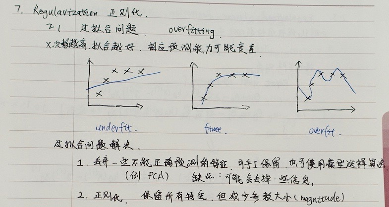
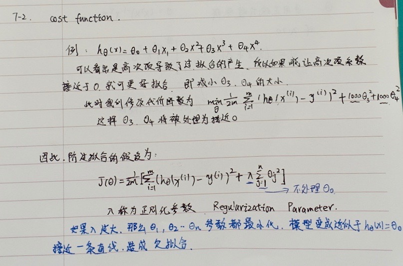
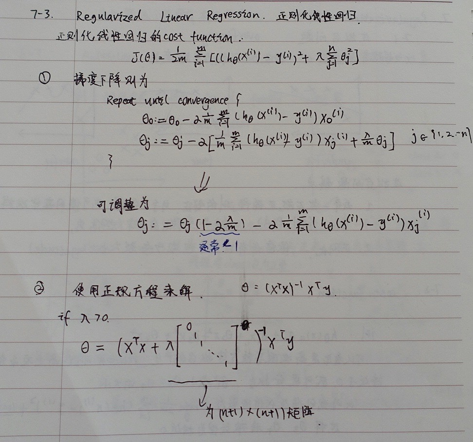
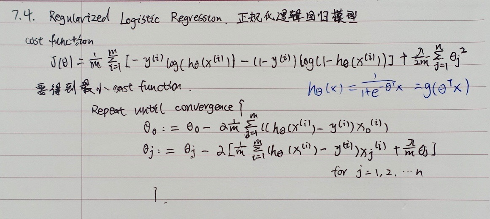

过拟合的问题 Problem of Overfitting
到现在为止，我们已经学习了几种不同的学习算法，包括线性回归和逻辑回归，它们能够有效地解决许多问题，但是当将它们应用到某些特定的机器学习应用时，会遇到过拟合(over-fitting)的问题，可能会导致它们效果很差。

就以多项式理解，$x$ 的次数越高，拟合的越好，但相应的预测的能力就可能变差。
如果我们发现了过拟合问题，应该如何处理？
丢弃一些不能帮助我们正确预测的特征。可以是手工选择保留哪些特征，或者使用一些模型选择的算法来帮忙（例如PCA）
正则化。 保留所有的特征，但是减少参数的大小（magnitude）。
代价函数 Cost Function

上面的回归问题中如果我们的模型是：
${h_\theta}\left( x \right)={\theta_{0}}+{\theta_{1}}{x_{1}}+{\theta_{2}}{x_{2}^2}+{\theta_{3}}{x_{3}^3}+{\theta_{4}}{x_{4}^4}$
我们可以从之前的事例中看出，正是那些高次项导致了过拟合的产生，所以如果我们能让这些高次项的系数接近于0的话，我们就能很好的拟合了。
所以我们要做的就是在一定程度上减小这些参数$\theta $ 的值，这就是正则化的基本方法。我们决定要减少${\theta_{3}}$和${\theta_{4}}$的大小，我们要做的便是修改代价函数，在其中${\theta_{3}}$和${\theta_{4}}$ 设置一点惩罚。这样做的话，我们在尝试最小化代价时也需要将这个惩罚纳入考虑中，并最终导致选择较小一些的${\theta_{3}}$和${\theta_{4}}$。
修改后的代价函数如下：$\underset{\theta }{\mathop{\min }}\,\frac{1}{2m}[\sum\limits_{i=1}^{m}{ { {\left( { {h}_{\theta }}\left( { {x}^{(i)}} \right)-{ {y}^{(i)}} \right)}^{2}}+1000\theta _{3}^{2}+10000\theta _{4}^{2}]}$
通过这样的代价函数选择出的${\theta_{3}}$和${\theta_{4}}$ 对预测结果的影响就比之前要小许多。假如我们有非常多的特征，我们并不知道其中哪些特征我们要惩罚，我们将对所有的特征进行惩罚，并且让代价函数最优化的软件来选择这些惩罚的程度。这样的结果是得到了一个较为简单的能防止过拟合问题的假设：$J\left( \theta \right)=\frac{1}{2m}[\sum\limits_{i=1}^{m}{ { {({h_\theta}({ {x}^{(i)}})-{ {y}^{(i)}})}^{2}}+\lambda \sum\limits_{j=1}^{n}{\theta_{j}^{2}}]}$
其中$\lambda $又称为正则化参数（Regularization Parameter）。 注：根据惯例，我们不对${\theta_{0}}$ 进行惩罚。
如果选择的正则化参数$\lambda$ 过大，则会把所有的参数都最小化了，导致模型变成 ${h_\theta}\left( x \right)={\theta_{0}}$，也就是上图中红色直线所示的情况，造成欠拟合。
那为什么增加的一项$\lambda =\sum\limits_{j=1}^{n}{\theta_j^{2}}$ 可以使$\theta $的值减小呢？
因为如果我们令 $\lambda$ 的值很大的话，为了使Cost Function 尽可能的小，所有的 $\theta $ 的值（不包括${\theta_{0}}$）都会在一定程度上减小。
但若$\lambda$ 的值太大了，那么$\theta $（不包括${\theta_{0}}$）都会趋近于0，这样我们所得到的只能是一条平行于$x$轴的直线。
所以对于正则化，我们要取一个合理的 $\lambda$ 的值，这样才能更好的应用正则化。
回顾一下代价函数，为了使用正则化，让我们把这些概念应用到到线性回归和逻辑回归中去，那么我们就可以让他们避免过度拟合了。
正则化线性回归 Regularized Linear Regression

对于线性回归的求解，我们之前推导了两种学习算法：一种基于梯度下降，一种基于正规方程。
正则化线性回归的代价函数为：
$J\left( \theta \right)=\frac{1}{2m}\sum\limits_{i=1}^{m}{[({ {({h_\theta}({ {x}^{(i)}})-{ {y}^{(i)}})}^{2}}+\lambda \sum\limits_{j=1}^{n}{\theta _{j}^{2}})]}$
如果我们要使用梯度下降法令这个代价函数最小化，因为我们未对$\theta_0$进行正则化，所以梯度下降算法将分两种情形：
${\theta_0}:={\theta_0}-a\frac{1}{m}\sum\limits_{i=1}^{m}{(({h_\theta}({ {x}^{(i)}})-{ {y}^{(i)}})x_{0}^{(i)}})$
${\theta_j}:={\theta_j}-a[\frac{1}{m}\sum\limits_{i=1}^{m}{(({h_\theta}({ {x}^{(i)}})-{ {y}^{(i)}})x_{j}^{\left( i \right)}}+\frac{\lambda }{m}{\theta_j}]$
$for$ $j=1,2,...n$
对上面的算法中$ j=1,2,…,n$ 时的更新式子进行调整可得：
${\theta_j}:={\theta_j}(1-a\frac{\lambda }{m})-a\frac{1}{m}\sum\limits_{i=1}^{m}{({h_\theta}({ {x}^{(i)}})-{ {y}^{(i)}})x_{j}^{\left( i \right)}}$
可以看出，正则化线性回归的梯度下降算法的变化在于，每次都在原有算法更新规则的基础上令$\theta $值减少了一个额外的值。
正则化的逻辑回归模型 Regularized Logistic Regression
针对逻辑回归问题，我们在之前的课程已经学习过两种优化算法：我们首先学习了使用梯度下降法来优化代价函数$J\left( \theta \right)$，接下来学习了更高级的优化算法，这些高级优化算法需要你自己设计代价函数$J\left( \theta \right)$。

自己计算导数同样对于逻辑回归，我们也给代价函数增加一个正则化的表达式，得到代价函数：
$J\left( \theta \right)=\frac{1}{m}\sum\limits_{i=1}^{m}{[-{ {y}^{(i)}}\log \left( {h_\theta}\left( { {x}^{(i)}} \right) \right)-\left( 1-{ {y}^{(i)}} \right)\log \left( 1-{h_\theta}\left( { {x}^{(i)}} \right) \right)]}+\frac{\lambda }{2m}\sum\limits_{j=1}^{n}{\theta _{j}^{2}}$
Python代码：
1 | import numpy as np |
要最小化该代价函数，通过求导，得出梯度下降算法为：
$Repeat$ $until$ $convergence${
${\theta_0}:={\theta_0}-a\frac{1}{m}\sum\limits_{i=1}^{m}{(({h_\theta}({ {x}^{(i)}})-{ {y}^{(i)}})x_{0}^{(i)}})$
${\theta_j}:={\theta_j}-a[\frac{1}{m}\sum\limits_{i=1}^{m}{({h_\theta}({ {x}^{(i)}})-{ {y}^{(i)}})x_{j}^{\left( i \right)}}+\frac{\lambda }{m}{\theta_j}]$
$for$ $j=1,2,...n$
}
注：看上去同线性回归一样，但是知道 ${h_\theta}\left( x \right)=g\left( {\theta^T}X \right)$，所以与线性回归不同。
注意：
虽然正则化的逻辑回归中的梯度下降和正则化的线性回归中的表达式看起来一样，但由于两者的${h_\theta}\left( x \right)$不同所以还是有很大差别。
${\theta_{0}}$不参与其中的任何一个正则化。